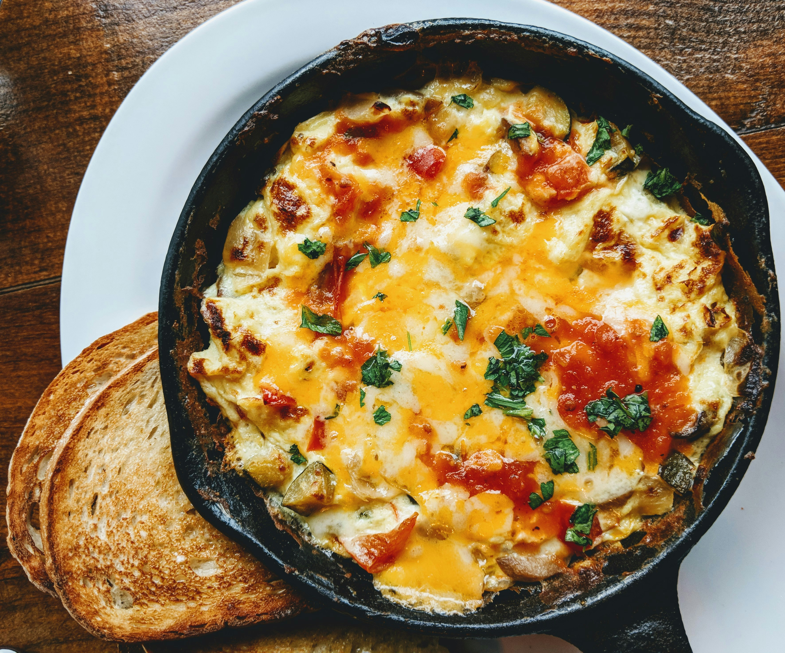

Enkelt recept på omellete
Gör traditionella tunna pannkakor med detta enkla och goda pannkaksrecept.
Ingredienser
För 2 portioner- 4 ägg
- 2 msk mjölk eller vatten
- 1 krm salt
- 1 krm svartpeppar
- 1 msk smör (till stekning)
- ost, skinka eller grönsaker (valfritt)
Så här gör du
- Knäck äggen i en skål.
- Tillsätt mjölk, salt och peppar. Vispa ihop lätt.
- Smält smöret i en stekpanna på medelvärme.
- Häll i äggsmeten.
- Rör försiktigt tills omeletten börjar stelna.
- Lägg på valfri fyllning om du vill.
- Vik ihop omeletten och stek klart i cirka 1 minut.
- Servera direkt.
Severingsförslag

